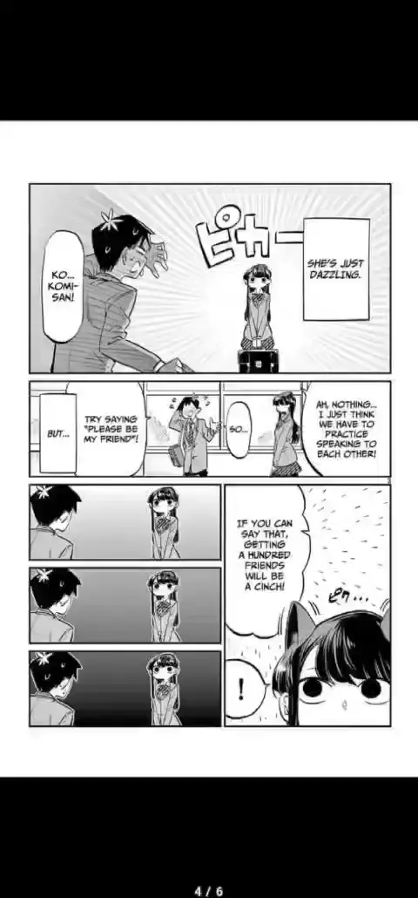
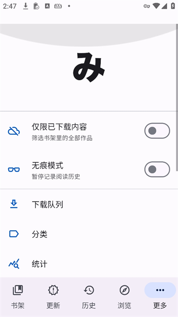

用 Mihon 七个月，我当初换过来的理由一条都没变
从 Tachiyomi 停更后搬到 Mihon，从 v0.15 的老界面一路用到现在 v0.20 多。有些东西越用越顺，有些当初没注意到的小烦扰慢慢冒了出来，还有一个功能我装了之后再没回去过。
当初为什么装它
说出来有点老套——Tachiyomi 停更了。2024 年初那个消息出来时我慌了一阵，书架上两百多部正在追的漫画、花了一下午调的阅读器设置、几个翻页区域的自定义，总不能说扔就扔。mihon官网 出来时社区一片欢呼，说原班人马接手、备份文件直接能恢复。我抱着试试看的心态导了一次 .tachibk，点下去十分钟不到，书架、分类、历史记录全回来了——那一刻我基本就没再犹豫，从mihon下载装好就一直用到现在。
哪点越用越顺手
Material 3 的底部导航栏。这话说出来可能有人觉得我被 Google 洗脑了，但用过侧边抽屉的老用户应该懂：右手单手操作时，底部三个 tab 比左上角汉堡菜单好够太多。尤其是地铁上挤着看的时候，大拇指能碰到的区域就是全部交互半径。现在我连回 Tachiyomi 的老版本（有时候帮朋友调试备份）都会下意识往屏幕下方戳两下，空的。
然后是后台更新的调度。原来 Tachiyomi 有时候醒着的时候疯狂发请求，一天能触发漫画源的反爬给我封几个小时。Mihon 的更新策略是"智能"的——它会看你最近在追的哪几部更活跃，优先更那些，冷门的就少打扰。我设了"已完结"分类排除全局更新之后，整个后台安静了很多，那些放了大半年的完结漫画再也不会半夜爬起来闹。
还有个小细节：阅读器里的「跳过重复章节」选项。我追的几部漫画有好几个翻译组，原来 Tachiyomi 默认是跳过的，结果有个组翻了特别好的版本被另一个组覆盖了我都没发现。Mihon 默认保留重复，让我自己选——虽然书架上会堆着几个同名章节，但翻一遍就能找到哪个组翻得更对味。

哪点越用越烦
追踪器每次重装都要重新登录。这不是 Mihon 的设计缺陷，是安全原因——备份里不存追踪器 token。但从 Tachiyomi 到 Mihon 我迁过两次、从 Mihon 的一个版本升到另一个版本又迁过一次，每一次都得去 MyAnimeList 和 AniList 重新授权。这个流程本身不复杂，但你得记得自己当初用的哪个邮箱、哪个密码、授权码存哪了。说个反直觉的：这件事我每做一次就烦一次，但没一次真正下定决心去改追踪器。大概因为懒得比烦更占上风。
还有个不算烦的小问题：某些老扩展在新版本上偶尔会掉链子。不是崩，是更新拉不下来、或者加载到一半卡住得手动刷新。Mihon 的扩展仓库和 Tachiyomi 完全兼容，但扩展作者自己的维护节奏跟不上主版本迭代的速度。我追的一个冷门源大概三个月没更新适配，每次更新完就得等一两周它跟上——等的过程中就只能看 MangaDex 上那些翻译质量参差不齐的版本。
哪个功能成了每天离不开的
无痕模式。
这个开关我装了之后就没关过——不是因为有什么见不得人的漫画，是它让书架和历史记录保持干净。原来 Tachiyomi 的历史记录会越堆越长，点开就是一片红的"未读"，想找三天前读到哪了得滚半天。开了无痕之后，读完一章就不写历史了，下次回来翻书架直接点那部就能接着看。加上我设置的"仅下载内容"，书架里只剩我已经下好的、准备要读的，在线的漫画全都隐藏掉了。这两个开关组合起来等于给书架做了一次断舍离——我从没想过一个这么小的功能能把阅读体验掰成两半。
还有一个功能我碰都没再碰
自动下载。
Mihon 的自动下载可以按分类设置，比如"正在读"的漫画更新就自动存好。我刚装的时候激动了一阵，把几个追得最紧的分类全勾上了。结果一个礼拜手机通知栏被下载提醒塞满，WiFi 没连的时候它还偷偷走流量。后来关掉了，改成手动选着下——每天晚上睡前刷一眼更新列表，挑两三部想看的下好，刚好够第二天地铁上看。
长期用下来，我当初的判断变了什么
我当初以为自己只是换了个壳，核心体验应该跟 Tachiyomi 一模一样。结果七个月之后发现，Material 3 不是什么无关紧要的视觉更新——它是整个交互体系的重写。底部导航、Material You 动态主题、更聪明的后台调度，这些东西单拎出来都不是革命性的，但凑在一起就让整个 app 用起来更"轻"了。不是功能轻，是用起来不费劲。
还有我当初低估了分类的作用。刚迁过来的时候我就按 Tachiyomi 老习惯分了"正在读"和"想读"，后来慢慢加了"已完结"、"冷门漫画"，再后来发现还可以给每个分类单独设更新策略——后来去mihon文档翻了一下才发现还有单独设自动下载开关，彻底把全局更新的打扰降到最低。现在我的书库有两百多部，但全局更新只跑"正在读"那十几部——省流量、省电池、省后台请求，也省得我每天被一堆更新通知轰炸。
去留结论
会不会卸载？短期不会。
Tachiyomi 停更之后，Mihon 是社区里最靠谱的继任者——它不是功能最多的分支，TachiyomiSY 和 J2K 比它花样多得多，但我用的所有功能它都有，而且更新节奏稳定，跟得上 Android 新版本的适配速度。我不会因为 Material 3 好看就留着它，也不会因为追踪器要重新登录就扔了它——就是够用。
什么信号出现就该换了？大概是扩展仓库大面积失兼容，或者某一天 Android 更新之后阅读器崩了修不回来。目前看不到这个苗头。

资料同步了三份，GitHub 上是主仓 alipymanbu/APK，国内访问不方便的话也可以去 Gitee 或 GitCode 拿，内容一样的。